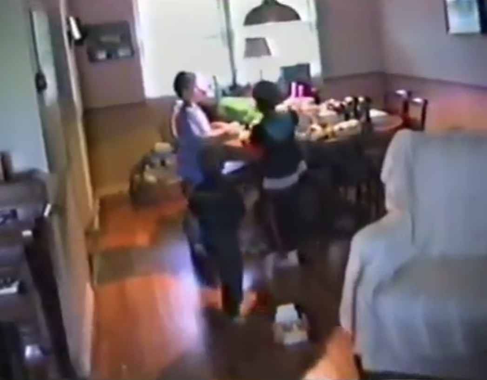
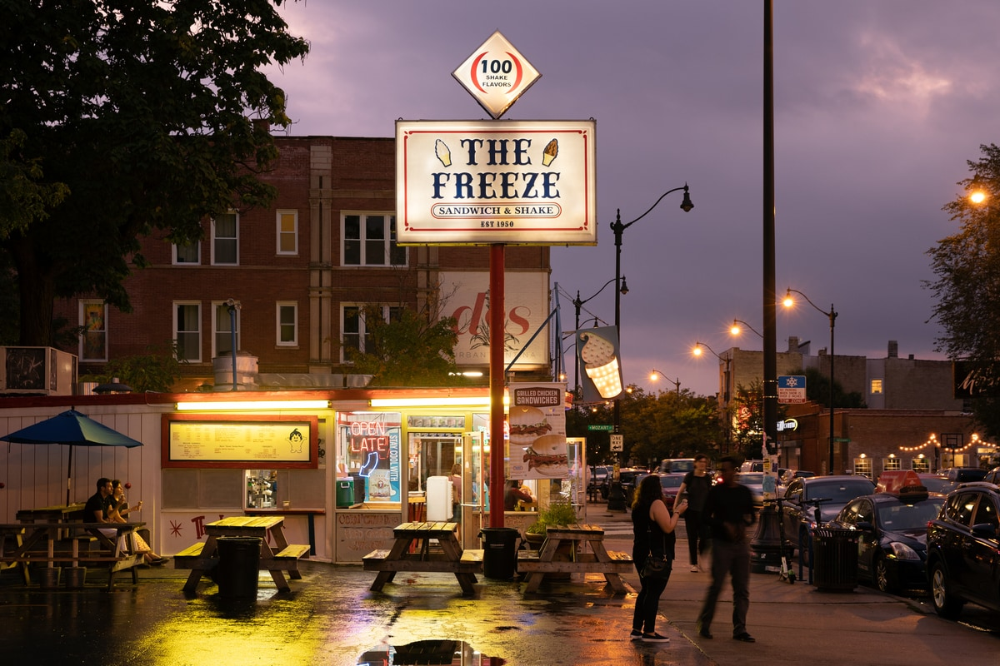
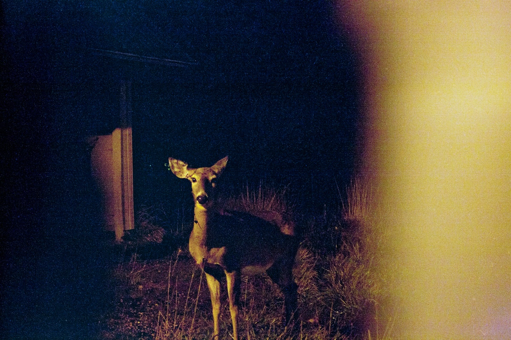
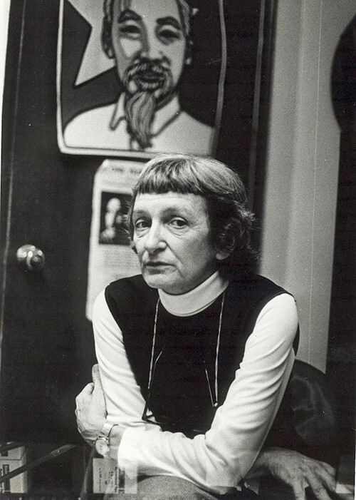
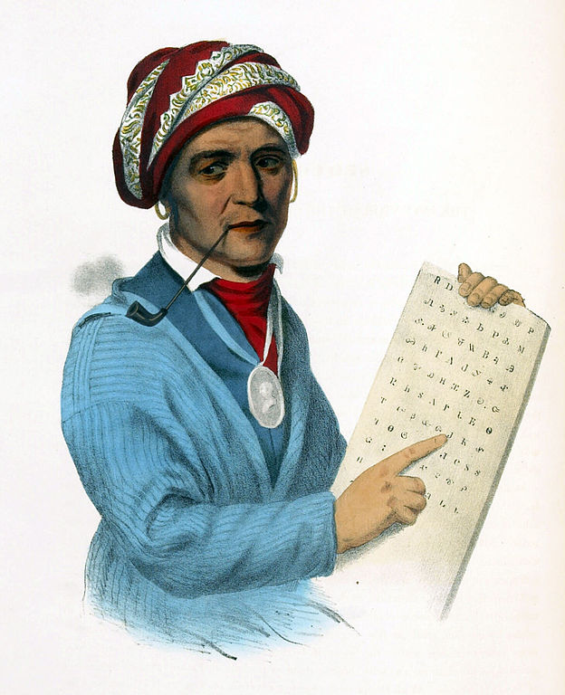
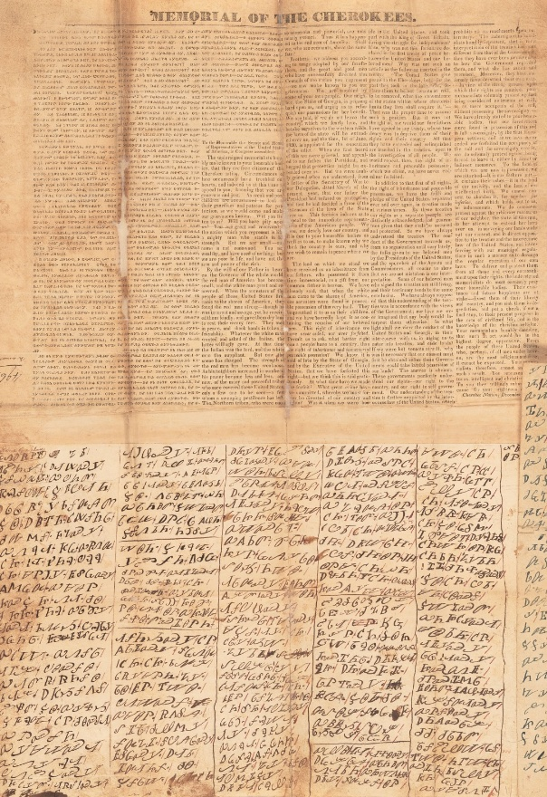
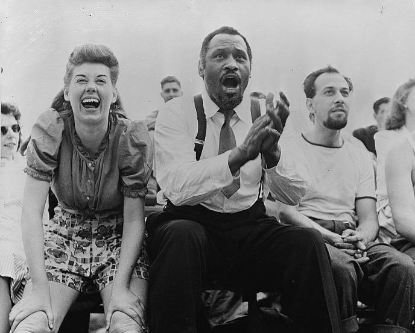
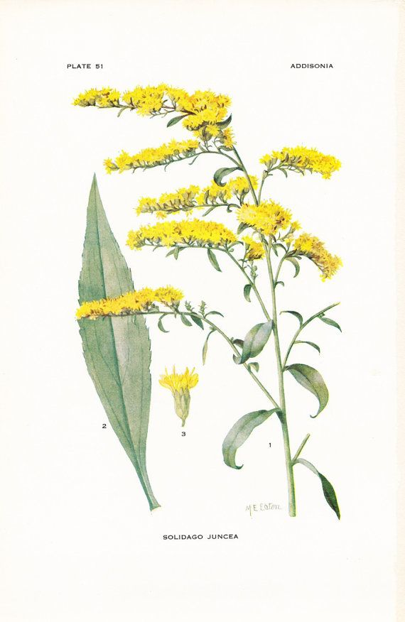
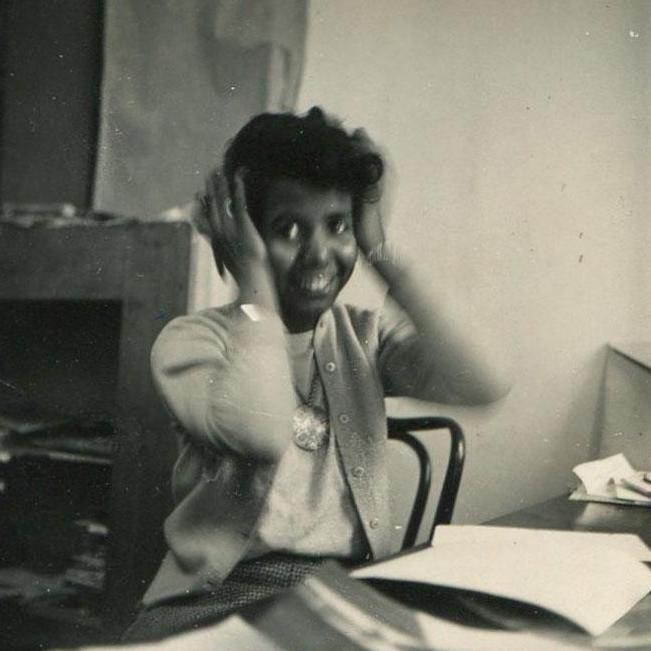

Taken from a clip from my brother John's 6th birthday. This is the
house I grew up in.

Founded in 1950, The Freeze, formally known as Tastee Freeze, is Logan
Square's go-to spot for soft-serve ice cream and no-frills fast food.

Photo by Margaret Durow.

Anne Braden in the SCEF office where she edited The Southern Patriot,
Louisville, Kentucky, October 1962. Wisconsin Historical Society.

Sequoyah was a Native American polymath of the Cherokee Nation. In
1821 he completed his independent creation of the Cherokee syllabary,
making reading and writing in Cherokee possible. This lithograph is
from the portrait painted by Charles Bird King in 1828.

Georgia, December 1829. The Cherokee Nation, protesting the state of
Georgia’s attempt to extend its authority over their lands, wrote this
memorial in 1829. Written in both English and Cherokee, it is a
plaintive appeal to remain on their ancestral lands. More info at
history.house.gov.

New York City, Paul Robeson (center), Jose Ferrer (right), watching
softball with other members of Othello production, Central Park, circa
1943-1944.

1917 Botany Print - Solidago Juncea - Early Goldenrod.

Lorraine Hansberry at her desk at Freedom magazine, 1952. Copyright
LHLT private collection.